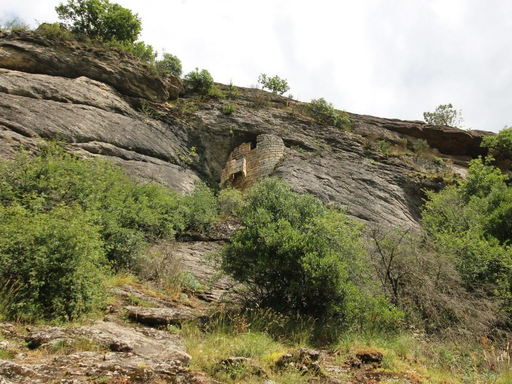

Voor dit uitje heeft u geen auto nodig: Fort Mahon is een van de stenen gehuchten van Flaviac, precies het dorp waar Les Cabritas ligt. U kunt direct bij het vakantiehuis beginnen aan een wandeling langs de oude gehuchten van de gemeente naar de mysterieuze versterkte grotten van de Jaubernie, richting Coux.

Fort Mahon, een stenen gehucht in het hart van Flaviac
Flaviac, genesteld in het dal van de Ouvèze, bestaat uit verschillende karaktervolle gehuchten, waaronder Fort Mahon, naast Léouze, het Château Saint-Quentin en het gehucht Cheylus. De wandelpaden langs deze oude stenen gehuchten bieden mooie uitzichten over het Rhônedal, de toppen van de Coiron en, bij helder weer, tot aan de Alpen.
De grotten van de Jaubernie, een versterkte schuilplaats in de rotswand
Iets verderop, hoog boven de gemeente Coux, liggen de grotten van de Jaubernie: vroegere natuurlijke holtes die werden omgebouwd tot versterkte half-troglodytische woningen, vooral eind 16e en begin 17e eeuw, tijdens en na het beleg van Privas in 1629. Van de acht grotten op de site hangen er vier tegen de rotswand; ze vallen nog steeds op door hun architectuur die schuilplaats en verdediging combineert.
Goed om te weten voor uw bezoek
Deze wandeling kunt u als lus maken vanaf het vakantiehuis of vanaf een parkeerplaats bij Coux, met een gemiddeld hoogteverschil. Goede wandelschoenen zijn aanbevolen. Omdat de grotten nu privébezit zijn, bekijkt u ze vanaf het pad zonder naar binnen te gaan. Het is een ideaal ochtenduitje, dat u 's middags makkelijk kunt combineren met een bezoek aan Privas, op een paar minuten afstand.
Praktische informatie vanuit Les Cabritas
- Afstand vanaf Flaviac: te voet te beginnen vanaf het vakantiehuis
- Beste periode: lente en herfst, of vroeg in de ochtend in de zomer
- Ideaal voor: wandelen in de buurt, erfgoed, uitjes zonder auto
Zin om Fort Mahon en de grotten van de Jaubernie te ontdekken vanuit uw vakantiehuis in de Ardèche?
Les Cabritas verwelkomt u in Flaviac, in het hart van de Ardèche, voor een comfortabel verblijf met privézwembad, vlak bij de mooiste plekken van de streek.
Beschikbaarheid bekijken